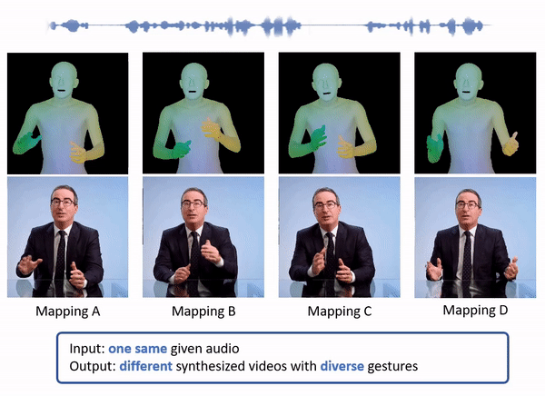
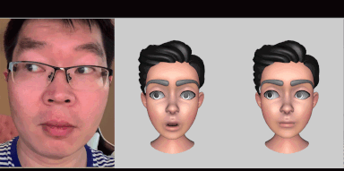
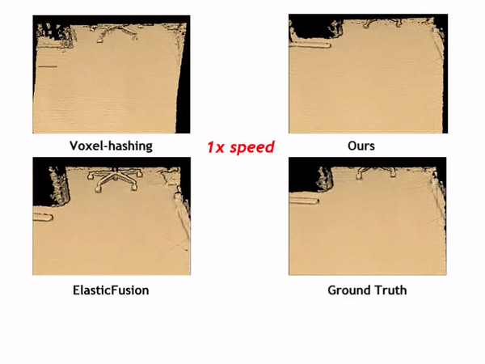
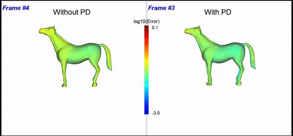
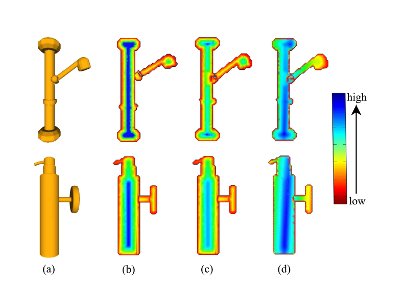

Chao Wang
About Me
I am a research engineer in the Intelligent Creation Lab at Bytedance / TikTok. Prior to joining Bytedance, I was a computer vision engineer at Matterport working on large scale high-quality 3D scene reconstruction and indoor touring. I graduated with my Ph.D. degree from Computer Science Department at the University of Texas at Dallas, under supervision of Prof. Xiaohu Guo. Before that, I graduated with my master degree in computer science from School of Software under supervision of Prof. Yu-shen Liu and Prof. Jun-hai Yong, and my bachelor degree from Department of Automation, both at Tsinghua University.
My current research interests are mainly in computer vision and graphics area, specifically in multi-modal motion synthesis, talking head generation, 3D human reconstruction and generative modeling. You can find My Resume here.
Work Experience
- [03/2020 - Present] Bytedance, San Jose, CA, USA — Research Engineer
- [10/2018 - 02/2020] Matterport, Sunnyvale, CA, USA — Computer Vision Engineer
Education
- Ph.D. in Computer Science, The University of Texas at Dallas, 2018
- M.S. in Computer Science, Tsinghua University, 2012
- B.S. Major in Automation, Tsinghua University, 2009
- B.S. Minor in Economics, Peking University, 2011
Publications
-
 Arxiv Preprint, 2024
Arxiv Preprint, 2024 -
IEEE/CVF Winter Conference on Applications of Computer Vision (WACV), 2024
-
AI-Generated Characters: Putting Deepfakes to Good Use (CHI Workshop), 2022
-
Arxiv Preprint, 2022
-
Computational Visual Media (CVM), 2017
-

-
Computer-Aided Design (CAD), 2012

Services
Conference Reviewers
- CVPR, ICCV, AAAI, Siggraph Asia, WACV, ACM MM, SPM, CVM, GMP, PacificVis, PG
Journal Reviewers
- TMM, GMOD, CASA, CAD, CAGD, TVCJ, CAVW, GM, WEVJ, Measurement Science and Technology (MST), Remote Sensing, Sensors, Drones, Electronics, Mathematics, Biomimetics, Forests, Symmetry